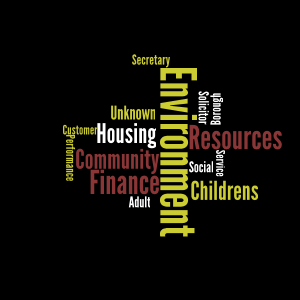

AVERAGE FOIR DURATION:
15.6 days
SATISFACTORY COMPLETION:
87%
Those who expect to reap the blessings of freedom must understand the fatigue of supporting it.
Thomas Paine
- Show FOIR results!
- Enable commenting
- Use feedback to train a bayesian filter